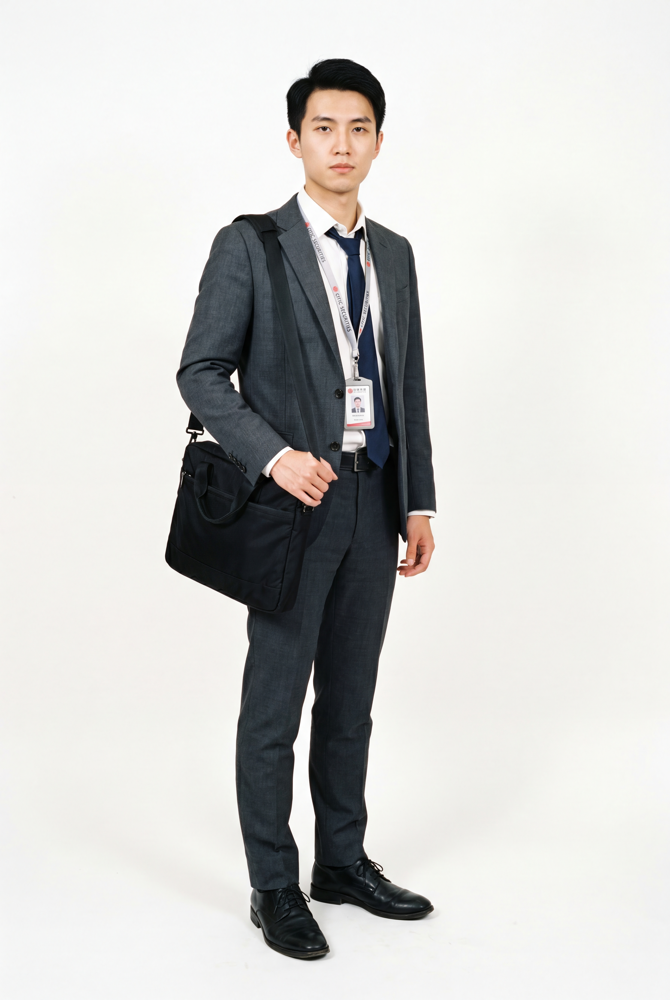
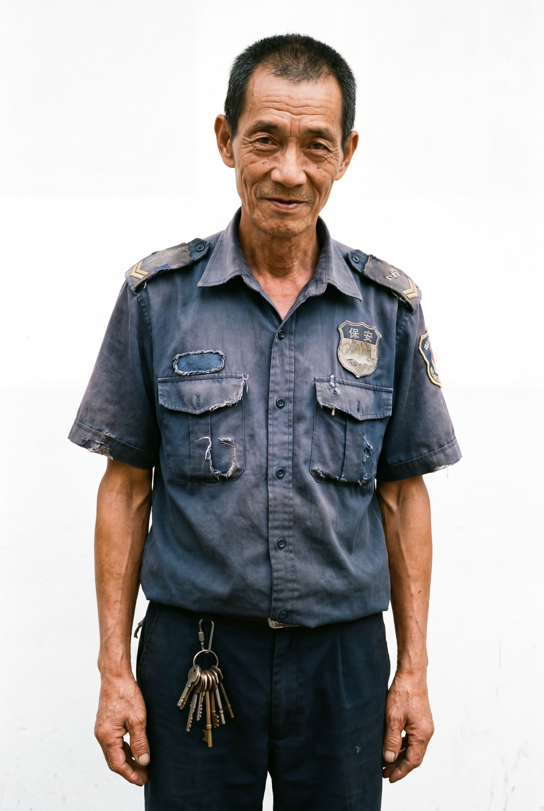

故事与人物 Story & Characters
在中国香港一栋旧楼里，几次看似琐碎的敲门，把三个不擅长求助的人推向彼此。当敲门从催租、争执、维修，变成一种每日确认，门内门外的人都开始改变。 In an old Hong Kong tenement, several trivial knocks push three people who are bad at asking for help towards each other. When knocking becomes a daily confirmation, everyone begins to change.

林越 · 26岁 Lin Yue · 26
被未来困住的人 Trapped by the future
内地来港金融初级分析师，勤奋务实，永远在计算得失。他嘴上说香港机会多，心里真正害怕的是「读了这么多书，最后还是回到原点」。 A junior financial analyst from mainland China, diligent and always calculating gains. What he fears most is ending up back where he started.

陈国强 · 72岁 Chen Guoqiang · 72
被过去困住的人 Trapped by the past
年轻时在内地闯荡，后来孤身返港，在旧楼做了20年保安。他絮絮叨叨讲当年，不是因为风光，而是害怕这一生没人记得。 Wandered in mainland China, returned alone, 20 years as security guard. He talks about old days because he fears no one will remember his life.
苏玉珍 · 74岁 Su Yuzhen · 74
被体面困住的人 Trapped by dignity
香港土生土长，早年留学英国，丈夫早逝，子女定居英国。坐拥几套房产，极其体面孤傲，却把自己活成了无法低头求助的囚徒。 Hong Kong born, UK educated, widowed, children in Britain. She owns properties, proud and dignified, yet a prisoner unable to ask for help.
核心主题：深沉的情感置换 Core Theme: Deep Emotional Transformation
家国不在护照上，在谁愿意在深夜去敲那扇门。新一代外来者林越，通过「叩门」这一行为，无意中承担起对这片土地及其孤独守望者的责任，完成了从「过客」到「守护者」的情感与身份转换。 Home is not on a passport, but in who will knock on the door late at night. Through knocking, Lin Yue inadvertently takes responsibility, transforming from passer-by to guardian.